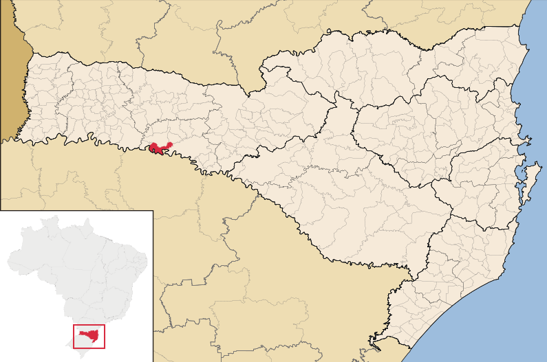

Sobre a cidade
Itá é um município brasileiro do estado de Santa Catarina. A cidade foi fundada em 1919, e está situada no vale do Rio Uruguai, um dos principais rios do estado de Santa Catarina.
Cidade Nova
A antiga cidade de Itá foi totalmente submersa pelas águas do lago da Hidrelétrica de Itá. O que restou acima da água foram as torres da igreja, hoje um ponto turístico do destino. Com isso, uma nova cidade foi totalmente reconstruída no alto do morro para receber os moradores. A nova cidade de Itá foi inaugurada em 1996 e a hidrelétrica no ano 2000.
Localização
Localiza-se a uma latitude 27º17'26" sul e a uma longitude 52º19'23" oeste, estando a uma altitude de 385 metros. Cidades vizinhas: Seara, Concórdia, Chapecó.
O que fazer em Itá?
A cidade apresenta boa estrutura para receber turistas. Depois da reconstrução, foram feitos investimentos no turismo rural, aquático e infraestrutura.